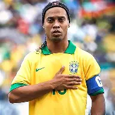
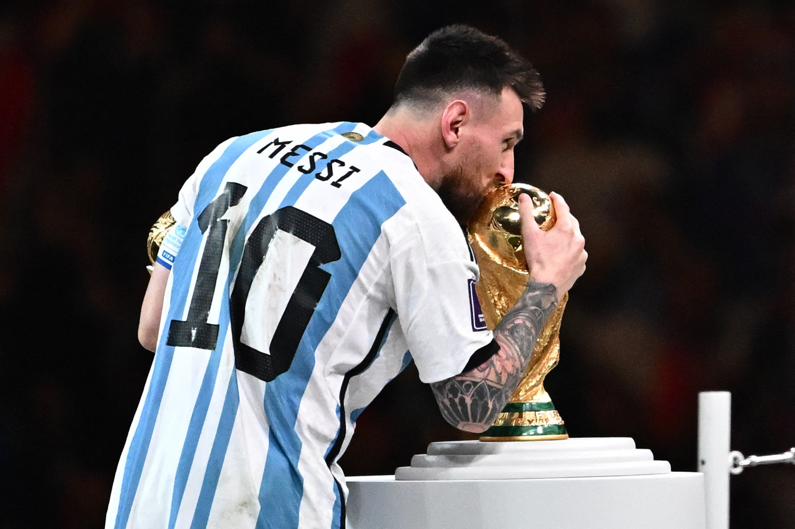

BLOG

O BRUXO
Ronaldinho Gaúcho foi um verdadeiro mágico com a bola, unindo habilidade extraordinária, criatividade e alegria contagiante. Sua genialidade o consagrou no Barcelona e na Seleção Brasileira, eternizando-o como um dos maiores ídolos do futebol.

TALENTO PURO
Messi é um gênio da consistência e da técnica refinada, transformando o futebol em arte com sua visão de jogo e dribles curtos. Maior ídolo da história do Barcelona e campeão mundial pela Argentina, ele é, para muitos, o maior jogador de todos os tempos.
FOCO E DISCIPLINA
Cristiano Ronaldo é o símbolo da dedicação e da força física, um artilheiro implacável que quebrou recordes por onde passou. Com passagens lendárias por Manchester United e Real Madrid, ele se consagrou como um dos maiores vencedores e atletas da história do esporte.